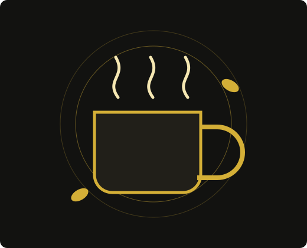

A MOMENT TO SLOW DOWN
在熟悉的香氣裡，找到自己的生活節奏。

ABOUT ZL COFFEE
zl咖啡以咖啡與休憩時光為主題，邀請你在忙碌日常之間稍作停留。從一杯咖啡的香氣開始，感受此刻，找到適合自己的步調。
品牌特色與實際服務內容為示範文案，待品牌方確認。
OUR HIGHLIGHTS
用一杯咖啡探索風味與香氣。
以細心烘焙呈現值得細品的層次。
為日常留白，享受屬於自己的片刻。
以上為網站示範介紹，實際豆款、烘焙與空間資訊待確認。
TAKE A BREATH